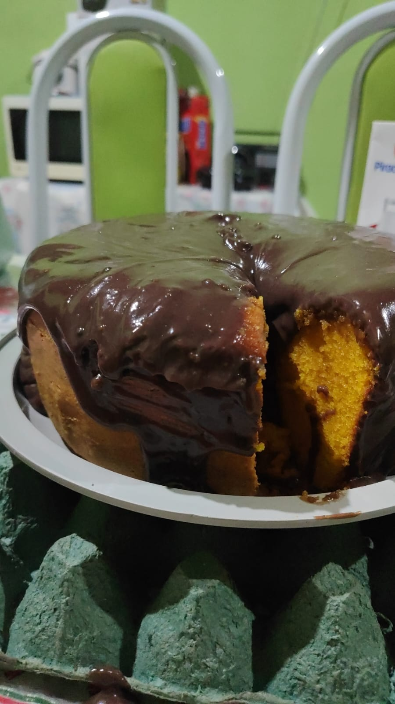

Ingredientes
- 8 ovos
- 2 xícaras de açúcar
- 3 xícaras de farinha de trigo
- 2 cenouras grandes
- 2 xícaras de óleo
- 1 colher de sopa de fermento
Modo de Preparo
- No liquidificador, bata os ovos, o açúcar, o óleo e as cenouras até obter um creme homogêneo.
- Despeje a mistura em uma tigela e adicione a farinha aos poucos, misturando bem.
- Por último, adicione o fermento e misture delicadamente.
- Asse em forno médio (180°C), pré-aquecido, por aproximadamente 40 minutos.